Awwwards
Readymag
Una metaweb que expone las posibilidades de Readymag.
El planteamiento de adaptación de la página web a plataformas específicas desde las que potenciales usuarios vayan a acceder les coloca en un punto ventajoso de comodidad en el acceso y la experiencia de usuario. Al ser una web enfocada únicamente a formatos móviles verticales la adaptación a otros ratios se genera con extensión del fondo.
Más allá de ello, manteniendo un primer plano estático y un segundo dinámico mantienen la atención del visitante sin desconcentrarlo de la información principal: la oferta de productos de Readymag y sus servicios; mostrados permanenetmente en un menú en la parte superior. Se aprecia la repetición de objetos gráficos primero en la capa frontal y posteriormente en la capa móvil del fondo, sirviendo como recordatorio de lo visto previamente en contraste al método de consumo de media actual y la plataforma desde la que vienen los visitantes. Cabe destacar la contraposición en cuanto a scroll de las capas ya que la que contiene Z-Index 1es estática pero al scrollear se desplaza y la que es de Z-Index -1 se mantiene estática en cuanto a scroll pero contiene elementos multimedia dinámicos.
Visualmente utiliza saturados en la tendencia de color-block creando una jerarquía marcada entre capas. Por último, en materia de organización, se divide en secciones que alternan los colores de fondo dependiendo de la información reflejada en ellas. Al igual que juega con elementos gráficos y CTA con microinteracciones que muestran las posibilidades de la página como modificaciones de forma en los contenedores o customización de los elementos.
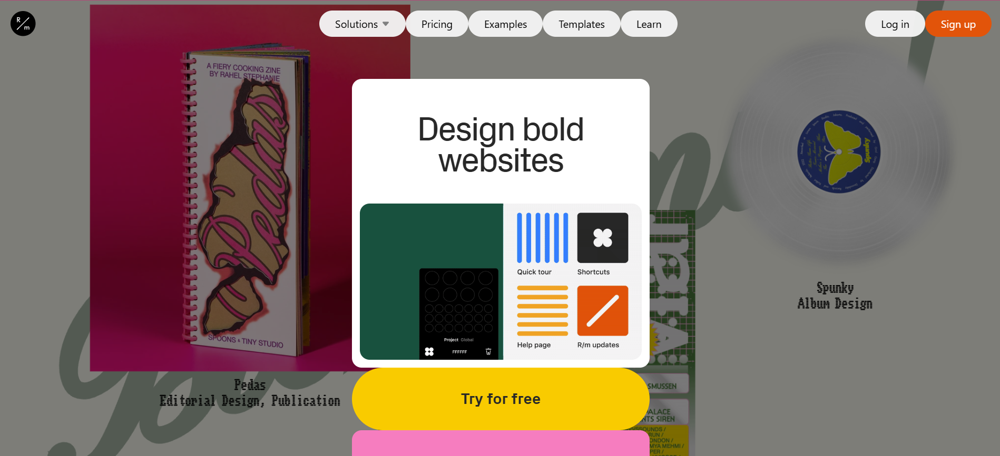 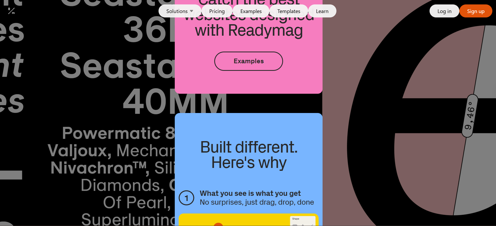 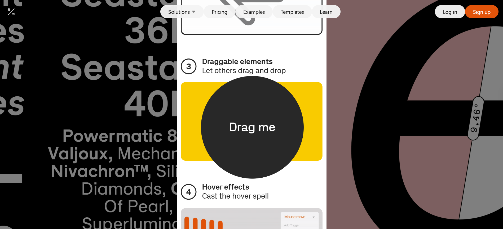 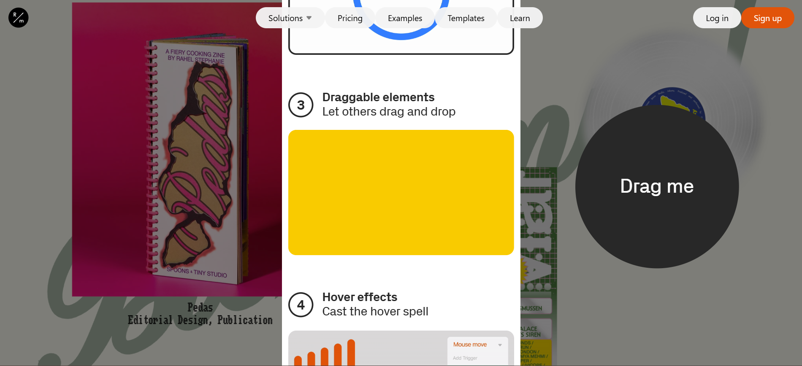
Webby Awards
TransLash
Ganadora del público en 2025 por su labor de protección a personas trans.
Cumpliendo una función social no solo destaca por esta sino por la aplicación al diseño web de necesidades de los usuarios visitantes.
Con una estructura básica de logotipo y menú en la sección header asigna a cada una de las subpáginas una gama cromática haciendo correlación entre temáticas. Sigue una estétita general del llamado minimalismo elevado con predominancia del blanco y negro y toques de color en elementos clave. Esta estructura se repite en el footer que al scrollear hacia abajo por completo ocupa toda la pantalla.
Se vale de elementos como galerias en grid para exponer artículos, imágenes u otros contenidos como gráficas, vídeos incrustados o botones asociados a hipervínculos con llamada a la acción que modifican su color con interacciones hover.
En cuanto al comportamiento del scroll se observa que al realizar scroll hacia arriba aparece el menú con un elemento distintivo "Safe Exit" acompañado de una X, al pulsar este botón se abre una ventana emergente a la página principal de la BBC y la propia página se autoredirige al buscador de Google proveyendo una seguridad en caso de estar navegando en un entorno que no sea seguro al 100%
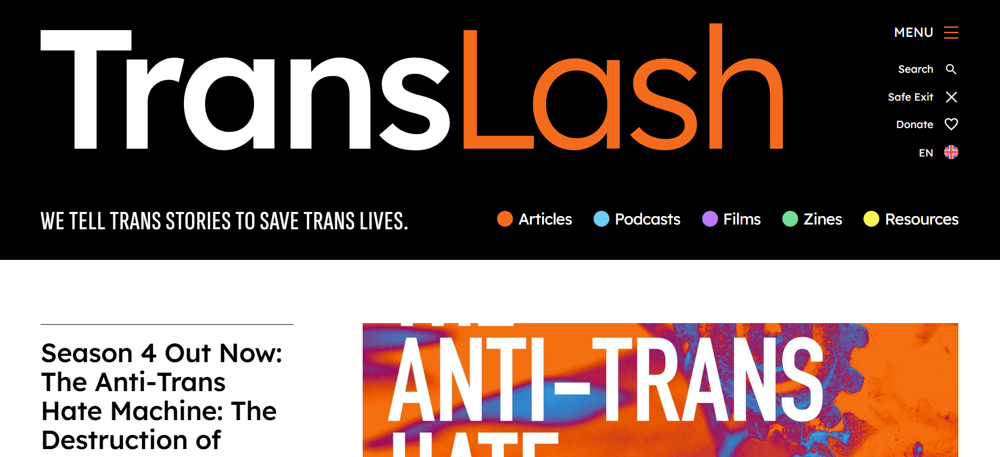 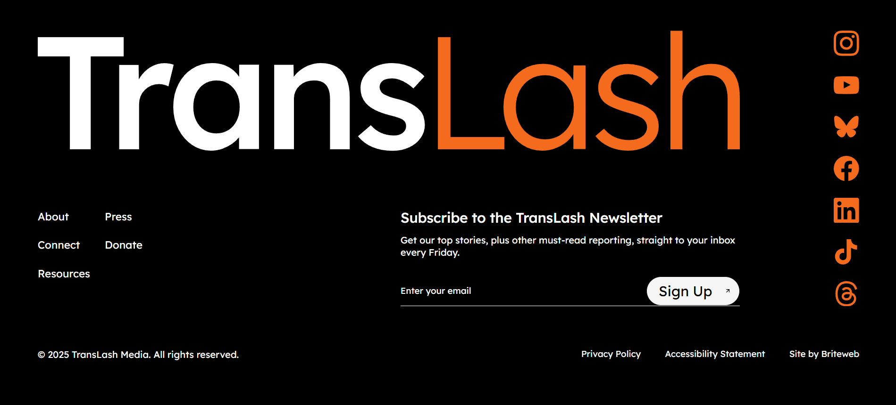 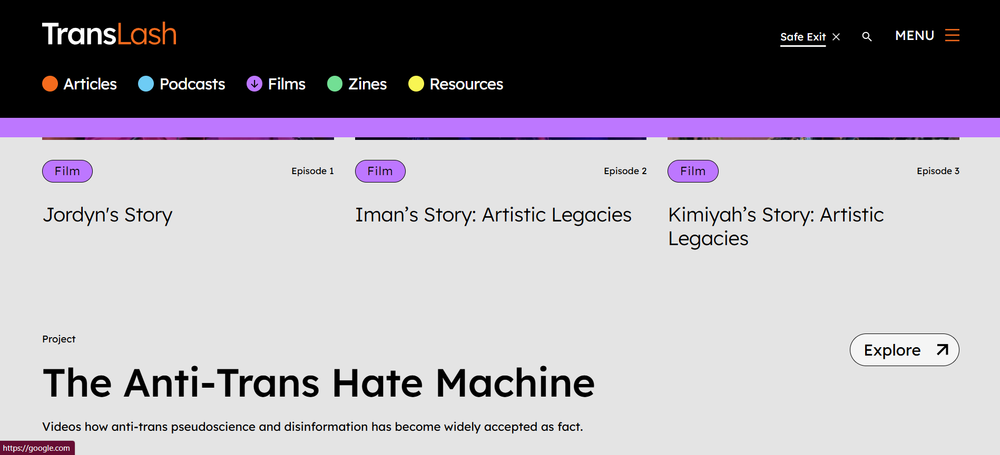
FWA
SMSY©
Web del día en FWA el 9 de septiembre de 2025.
Emepzando fuerte con una experiencia sensorial automáticamente al carga esta web nos da la bienvenida con una invitación a interactuar con una serie de botones de navegación que al presionar nos 'catapulta' al espacio web. Este inicio clasifica la estética en Cybercore; 'raised on 90s clasics', tomando elementos como tipografía con píxeles vistos, contadores de datos como FPS o visitantes que se actualizan en tiempo real según los factores que analizan.
Cuenta con 3 secciones principales inlcuyendo una de 'Explore' que tiene como objetivo la navegación libre por la web que incorpora elementos conocidos de entornos digitales y de videojuegos destacando la navegación en los ejes x y z. No se realiza scroll vertical. Destaca por la personificación del visitante en un avatar a través del que se navega por al web conectando de manera directa con las inspiraciones explicitadas previamente.
La estructura aunque se mantiene esencialmente igual integra elementos identificativos en cada una, por ejemplo, en la página en la que expone sus proyectos inlcuye un menú inferior con barras correspondiendo a cada uno por el que navegar entre trabajos que se expande al clicar sobre cada una de las barras. Inlcuye una segunda manera de navegación en esta sección al clicar sobre el botón que nos permite expandir la información de los proyectos; esta se trata de a través del scroll moverse por los proyectos de manera horizontal en un overlay sobre el fondo.
Las microinteracciones en vez de ser una característica mínima es una principal pues a cualquier movimiento del ratón se ejecutan ya sea cambios tipográficos, de medición, fondos o elementos gráficos.
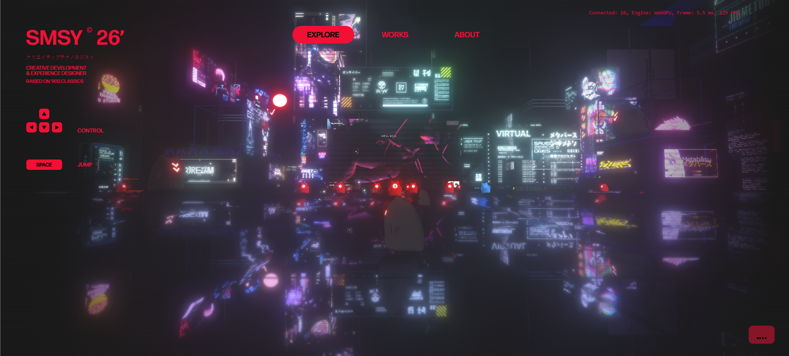 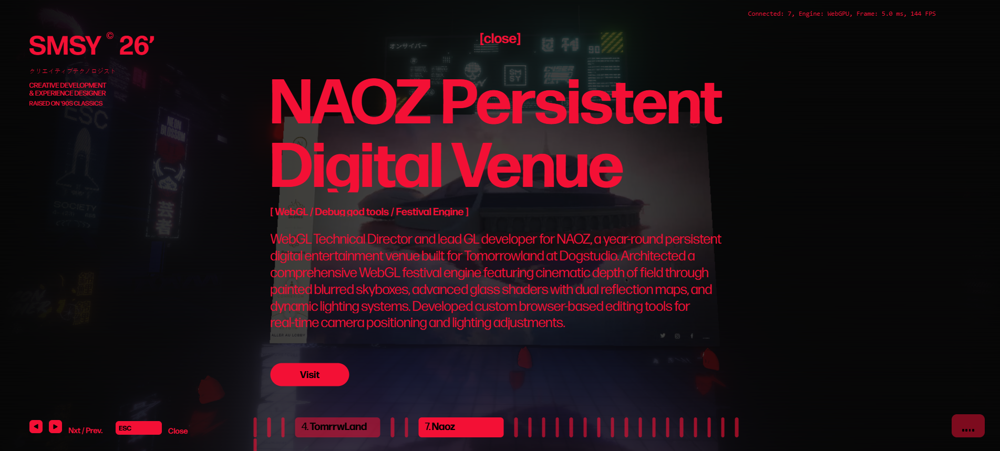 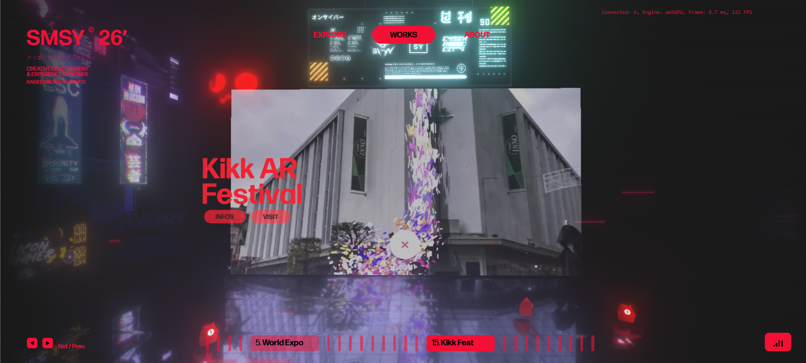
CSS DESIGN AWARDS
SofaKnows
Trabajo fotográfico y tipográfico experimental.
Tras la carga esta web presenta animaciones tipográficas que van a mantenerse a través de toda la página jugando con deformaciones de las proporciones al igual que con modos de fusión de capa siguiendo procedimientos de legibilidad en los textos repitiéndose al incio de carga de cada una de als páginas. Al cargar la landing page se muestra un menú en modo de capa "Difference" o "Exclusion" que muestra las diferentes secciones pro als que se puede navegar. En el fondo se muestra la reproducción de un videoarte dirigido por la misma artista a la que pertenece el site.
Estilísticamente entra en la categoría de brutalismo tipográfico aplicado a web construyéndose de manera experimental jugando con tamaños y proporciones de los elementos tanto escritos como gráficos. Mantiene tres tamaños principales de tipografía con altocontraste entre sí variando entre bold extended para señalizar donde nos encontramos; bold o regular para textos y subtítulos manteniendo un tamaño considerablemente más grande de lo habitual para estos campos de texto; y anotaciones en tamaño bastante reducido con una tipografía diferente a la habitual utilizada.
Incorpora microinteracciones de revelado de imágenes o modificación de la apariencia de la web manteniendo el recurso de jugar con los modos de fusión de capa y complementando con la ttransparencia. El visonado de las imágenes se ejecuta a través de hover sobre estas que aumentan y aparece un overlay de color que emborrona el resto de la web permitiendo enfocarse en el elemento seleccionado. Para mayor customización y alineándose con la línea estética; en las secciones de visualización de contenido existe un botón de cambio de tema claro/oscuro.
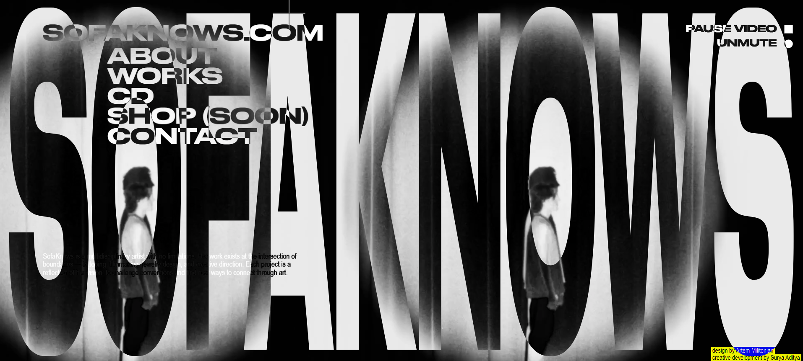 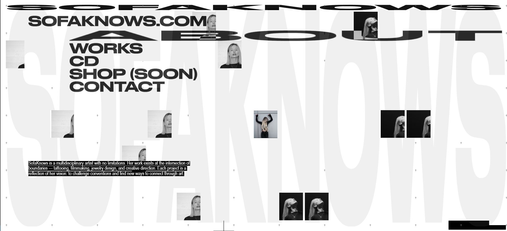 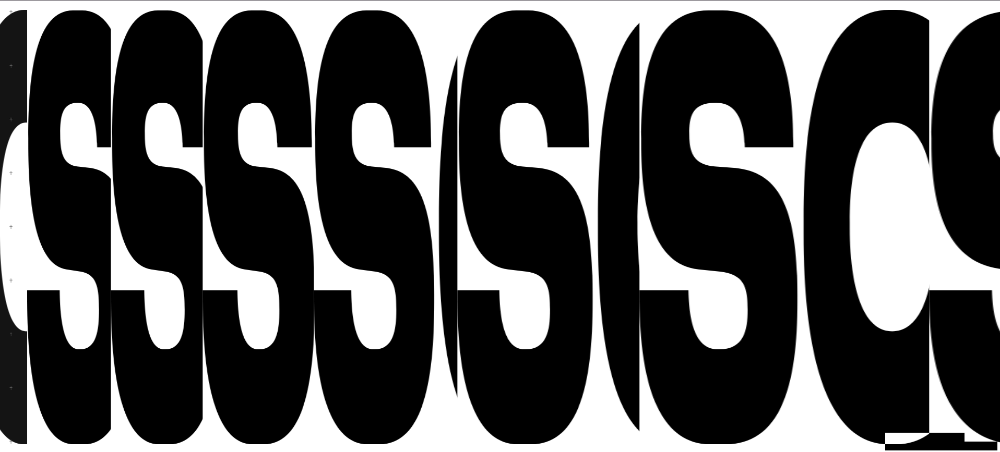 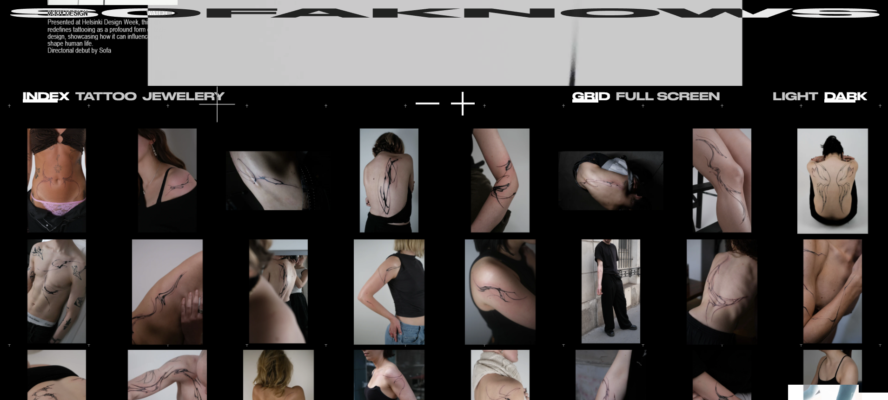